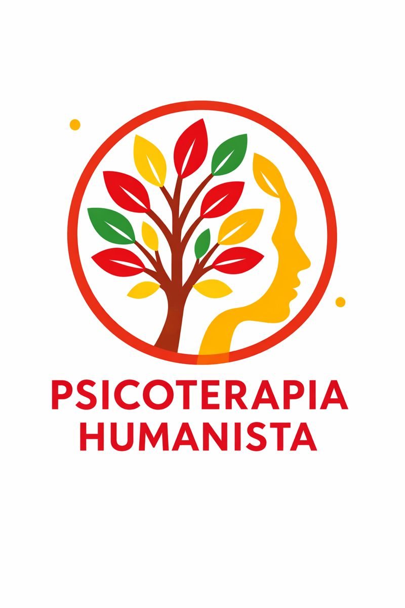

Acerca de mí
Nací en Santiago de Chile en el año 1985 y soy Psicólogo Magíster en Clínica Gestalt, con diplomados en PNL y Trauma Complejo Relacional. Llevo más de 15 años de trayectoria en contextos relacionados a la infancia y adolescencia, trabajando 10 años en Programa de Reparación en Maltrato, siendo Director de PRM Ciudad del Niño Isla de Maipo. Además, en contextos ligados a adolescencia y responsabilidad penal adolescente. Desde el año 2019, atiendo de manera particular a población infanto-juvenil y adulta.
Por otra parte, me desempeño como consultor y capacitador a empresas en procesos de gestión y cambio organizacional, diseñando programas que las organizaciones necesiten.
Respecto al área docente, soy profesor de postgrado en línea Humanista – Gestalt en Instituto Superior de Especialidades Profesionales (ISEPS) – Perú.


Enfoques Terapéuticos
Psicoterapia Humanista
Se centra en tu potencial de crecimiento y autorrealización, viéndote como una persona completa con la capacidad de tomar tus propias decisiones. El terapeuta crea un ambiente de aceptación incondicional y empatía para que explores tus pensamientos, emociones y creencias del presente, sin juicios.
Psicoterapia Gestalt
Te invita a enfocarte en el "aquí y ahora", es decir, en tus experiencias, emociones y sensaciones del momento presente. Su objetivo principal es que logres un profundo "darse cuenta" de cómo funcionan tus pensamientos, sentimientos y acciones, y cómo se manifiestan en tu cuerpo y tu vida.
Programación Neurolingüística (PNL)
Te ayuda a entender cómo funcionan tu mente, tu lenguaje y tus comportamientos para que puedas realizar cambios positivos en tu vida. Se enfoca en el presente y te ofrece herramientas prácticas y concretas para "reprogramar" patrones de pensamiento, emoción y acción que ya están obsoletos.
Servicios de Capacitación y Consultoría
Servicios de capacitación y consultoría especializada para empresas, colegios y servicios públicos. Mi objetivo es potenciar el desarrollo humano y organizacional a través de programas personalizados que abordan temáticas de: gestión emocional, liderazgo, resolución de conflictos, primeros auxilios psicológicos (PAP), Ley Karin, protocolo CEAL, cuidado integral de equipos, comunicación asertiva, realizando asesorías en procesos de gestión y cambio organizacional, diseñando programas que las organizaciones necesiten. Mediante la consultoría estratégica, colaboro con las instituciones para crear ambientes que promuevan el bienestar, la excelencia y el máximo potencial de cada trabajador, su equipo de trabajo y la organización.
Capacitación
Capacitación en temas de salud mental, manejo del estrés, comunicación efectiva y trabajo en equipo.
Coaching estratégico
Acompañamiento personalizado para líderes y ejecutivos en el desarrollo de habilidades directivas.
Contacto
Profesor Rodolfo Lenz 505, Depto 55, Ñuñoa
Temas de Actualidad
Artículos y contenido sobre salud mental, psicoterapia y bienestar organizacional.